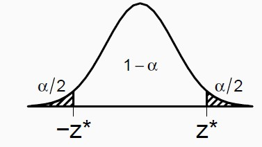

# Recuerden SIEMPRE cargar los paquetes!!
library(tidyverse)
# Tomes los datos de:
# https://www.kaggle.com/code/lusfernandotorres/spotify-top-hits-2000-2019-eda/data
# Llamen los archivos desde un directorio relativo y no absoluto
# Este es absoluto
#data <- read.csv("/Users/ccard/Dropbox/analitica_datos/slides/lecture5/data/spotify_data.csv")
# Este es relativo
data <- read.csv("data/spotify_data.csv")Analítica de Datos
Pruebas de Hipótesis
Carlos Cardona Andrade
Tabla de contenido
Un poco más sobre
Intervalos de Confianza
Spotify - Data
Spotify - Data
# Top 8 más populares
data %>%
select(artist, popularity, danceability) %>%
arrange(desc(popularity)) %>%
head(8) artist popularity danceability
1 The Neighbourhood 89 0.612
2 Tom Odell 88 0.445
3 Eminem 87 0.908
4 Eminem 86 0.949
5 WILLOW 86 0.764
6 Billie Eilish 86 0.351
7 Billie Eilish 86 0.351
8 Eminem 85 0.548# Cómo le va a Bad Bunny?
data %>%
select(artist, song, popularity, danceability) %>%
filter(artist=="Bad Bunny") artist song popularity danceability
1 Bad Bunny MIA (feat. Drake) 77 0.817
2 Bad Bunny Callaita 81 0.610Danceability a través del tiempo
Danceability a través del tiempo
años_interes <- c(2000, 2005, 2010, 2015, 2019)
data_filtrada <- data %>% filter(year %in% años_interes)
ggplot() + # Density for the selected years
geom_density(data = data_filtrada, aes(x = danceability, color = factor(year), fill = factor(year)), alpha = 0.4) +
labs(title = "Distribución de Danceability (2000-2019)",
x = "Danceability",
y = "Densidad",
color = "Año",
fill = "Año") +
theme_minimal() +
theme(
legend.position = "bottom",
plot.title = element_text(size = 26), # Increase plot title size
axis.title.x = element_text(size = 20), # Increase x-axis title size
axis.title.y = element_text(size = 20), # Increase y-axis title size
axis.text = element_text(size = 16), # Increase axis numbers size
legend.text = element_text(size = 16), # Increase legend text size
legend.title = element_text(size = 18) # Increase legend title size
)Danceability a través del tiempo
Danceability a través del tiempo
Danceability a través del tiempo
Danceability a través del tiempo
IC para Danceability - Cálculo Manual
# Calculamos la media poblacional
media_poblacional <- mean(data$danceability, na.rm = TRUE)
media_poblacional[1] 0.6674375# Set seed for reproducibility
set.seed(123)
# Tomamos una muestra de 100 canciones
muestra <- data %>% sample_n(100)
# Calculamos la media muestral
media_muestral <- mean(muestra$danceability, na.rm = TRUE)
media_muestral[1] 0.67731# Calculamos el error estándar
error_std <- sd(muestra$danceability, na.rm = TRUE) / sqrt(nrow(muestra))
error_std[1] 0.01394942IC para Danceability - Cálculo Manual
# Definimos el nivel de confianza (e.g., 95%)
confidence_level <- 0.95
z_score <- qnorm((1 + confidence_level) / 2)
z_score[1] 1.959964# Calculamos los intervalos de confianza
ic_inf <- media_muestral - z_score * error_std
ic_sup <- media_muestral + z_score * error_std
# Definamoslo como intervalo
ci <- c(ic_inf, ic_sup)
ci[1] 0.6499696 0.7046504IC para Danceability - Comando t.test
## Otra manera es usando el comando t.test
result <- t.test(muestra$danceability, conf.level = 0.95)
result
One Sample t-test
data: muestra$danceability
t = 48.555, df = 99, p-value < 2.2e-16
alternative hypothesis: true mean is not equal to 0
95 percent confidence interval:
0.6496313 0.7049887
sample estimates:
mean of x
0.67731 [1] 0.6496313 0.7049887
attr(,"conf.level")
[1] 0.95IC con distintos niveles de confianza
95% IC para 100 muestras
90% IC para 100 muestras
Pruebas de
Hipótesis
Guinness - William Gosset
Guinness - William Gosset
“On the other hand, it is generally agreed that to leave the rejection of experiments entirely to the discretion of the experimenter is dangerous, as he is likely to be biassed. Hence it has been proposed to adopt a criterion depending on the probability of such a wide error occurring in the given number of observations.”
Ejemplo: Control de Calidad en Guinness
El equipo de control de calidad de la Cervecería Guinness quiere asegurarse de que su cerveza tenga un contenido de alcohol consistente, lo cual es crucial para mantener el sabor y la satisfacción del cliente. Para monitorear esto, miden regularmente el contenido de alcohol en sus lotes de cerveza.
El maestro cervecero cree que el contenido de alcohol óptimo para su stout estándar es del 4.5%. Para evaluar si el proceso de elaboración está manteniendo este objetivo, el equipo toma una muestra aleatoria de 106 lotes de cerveza de su última producción. Esta muestra arroja un contenido de alcohol promedio del 4.6% con una desviación estándar de 0.5%.
¿Proporcionan estos datos evidencia convincente de que el contenido promedio de alcohol de todos los lotes de cerveza es mayor que el objetivo establecido por el maestro cervecero?
Ejemplo: Control de Calidad en Guinness
Hipótesis
Población: todos los lotes de cerveza- El
parámetro de interés\(\color{purple}\mu\) es el contenido promedio de alcohol de todos los lotes de cerveza - Hay dos explicaciones de por qué la media muestral es mayor que el 4.5% recomendado por el cervecero:
- La media real de la población es diferente.
- La media real de la población es 4.5%, y la diferencia entre la media real de la población y la media de la muestra se debe simplemente a la variabilidad natural del muestreo.
- \(\color{blue}{H_0}\) \(: \mu = 4.5\%\) (El contenido de alcohol de los lotes es 4.5%)
- \(\color{blue}{H_A}\) \(: \mu > 4.5\%\) (El contenido de alcohol de los lotes es \(>\) 4.5%)
Maneras incorrectas de establecer H_0 y H_A
- \(H_0\) y \(H_A\) SIEMPRE se expresan en términos de parámetros de población, no de estadísticas de muestra.
- Ni:
\[H_0 : \bar{x} = 4.5, \quad H_A : \bar{x} > 4.5\]
- ni:
\(H_0 :\) el contenido de alcohol promedio en la muestra es 4.5%
\(H_A :\) el contenido de alcohol promedio en la muestra es 4.6%
son correctas. Las hipótesis son:
\[H_0 : \mu = 4.5, \quad H_A : \mu > 4.5\] También siempre especifíquen claramente qué es \(\mu\)
e.g., \(\mu\) es el contenido de alcohol promedio en los lotes de cerveza
Alcohol en la Guinness - Test
Por el TLC, bajo \(H_0:\mu=4.5\), la distribución muestral de la media muestral es:
Para medir qué tan inusual es la media muestral observada \(\bar{X}=4.6\) en relación con su distribución muestral, la estadística de prueba que usamos es el z-score.
Alcohol en la Guinness - Test
\[Z=\dfrac{\bar{X}-\mu_0}{s_{\bar{X}}}=\dfrac{\bar{X}-\mu_0}{s_X/ \sqrt{n}}=\dfrac{4.6-4.5}{0.5/\sqrt{106}}\approx2\]

¿Qué tan inusual es la media?
- Las medias muestrales que son probables de obtener si \(H_0\) es cierta son las medias muestrales cercanas a la hipótesis nula.
- Las medias muestrales que son poco probables de obtener si \(H_0\) es cierta son aquellas lejanas a la hipótesis nula.
¿ Qué significa “alta” y “baja” probabilidad?
Esto se establece a partir de una probabilidad específica , la cual se conoce como nivel de significancia (se denota con \(\alpha\)), para la prueba de hipótesis.
El valor \(\alpha\) es una probabilidad pequeña que se utiliza para identificar muestras de poca probabilidad o inusuales.
Por convención, los valores \(\alpha\) más comunes son \(\alpha\) = 0,05 y \(\alpha\) = 0,01. Por ejemplo, si usamos \(\alpha\) = 0,05, separamos el 5% de las medias más improbables (valores extremos) del 95% de las medias muestrales más probables (valores centrales).
Región y Z-Score críticos
Los valores extremos que son poco probables, definidos por el nivel de significancia, constituyen lo que se conoce como región crítica.
Estos valores son inconsistentes con la hipótesis nula. También se pueden interpretar como valores muestrales que proveen evidencia convincente de que el tratamiento/condición tienen algún efecto.
Al igual que con los intervalos de confianza, para determinar la ubicación exacta de los límites se utilizan el \(\alpha\) y la tabla de la normal para encontrar el z-score crítico.
¿Cuál es nuestro z o valor crítico?
- Si nuestro \(\alpha=0.05\), el z-crítico será 1.64 de acuerdo a la tabla de la distribución normal
Resultado de la prueba de hipótesis
\[Z=2>1.64=Z_{\alpha}\]
La media muestral se ubica en la región crítica.
Un valor muestral en esta región es poco probable si \(H_0\) es cierta.
Rechazamos \(H_0\)
Los datos proveen evidencia convincente de que los lotes de cerveza tienen un contenido de alcohol promedio mayor a 4.5%.
En otras palabras, la media muestral es estadísticamente diferente de 4.5%.
Prueba de hipótesis a dos colas
Si el maestro cervecero quisiera saber si los datos proveen evidencia consistente que el contenido promedio de alcohol es diferente que el 4.5% recomendado, la hipótesis alternativa cambiaría:
\[H_0: \mu=4.5\] \[H_A: \mu\neq4.5\]
Prueba de hipótesis a dos colas
En este caso, una media muestral \(\bar{X}\) mucho menor a 4.5 también sería evidencia en favor de \(H_A\).
Cuando no hay una dirección en la \(H_A\), se tienen dos regiones críticas.
P-Value
- El z-score tiene una probabilidad asociada dada la forma de la distribución normal.
- Por ende, la decisión de una prueba de hipótesis puede basarse tanto en el z-score como en su probabilidad asociada (p-value).
P-Value
- Para un nuestro \(z = 2\), sabemos que \(p-value = 0.023\). Si \(\alpha = 0.05\), se rechaza la hipótesis nula dado que \(0.023 < 0.05\).
- Esto sucede para un nivel de significancia del 5%, ¿qué sucede si este cambia a 1%?
- El p-value es la probabilidad de observar los resultados del estudio (\(\bar{X}=4.6\)), u otros más alejados de la hipótesis nula, si la hipótesis nula fuera cierta.
Resumen - Prueba de hipótesis
- Establezca las hipótesis
- \(H_0:\mu=\mu_o\)
- \(H_A:\mu\)< o > o \(\neq\mu_o\)
- Revise los supuestos y condiciones
- Independencia
- Normalidad: \(n>30\)
- Calcular el z-score y el p-value (dibujen la gráfica!!)
\[Z_{\bar{X}}=\dfrac{\bar{X}-\mu_0}{s_X/\sqrt{n}}\]
Tomen una decisión
- Si \(Z_{\bar{X}} \geq Z_{\alpha} \rightarrow p \leq \alpha\) : Se rechaza \(H_0\)
- Si \(Z_{\bar{X}} < Z_{\alpha} \rightarrow p > \alpha\) : No se rechaza \(H_0\)
Prueba de hipótesis con dos muestras
¿Las empresas que cotizan en NYSE tienen mayores rendimientos promedio de acciones que las que cotizan en NASDAQ?
¿Las tasas de interés de las hipotecas ofrecidas por el banco A son más bajas que las ofrecidas por el banco B?
¿Los salarios promedio de los empleados en empresas tecnológicas son diferentes de los de las empresas manufactureras?
El objetivo ahora es comparar las medias (o alguna cantidad) \(\mu_1\) y \(\mu_2\) de dos poblaciones
Muestras independientes y relacionadas
Las hipótesis en este caso son:
- \(H_0:\mu_A-\mu_B=0\)
- \(H_A:\mu_A-\mu_B\neq0\)
Las muestras pueden ser:
Independientes: medición de unidades en distintos grupos.
Relacionadas: medición de la misma unidad antes y después de alguna intervención/suceso.
Un ejemplo
Una empresa de gestión de activos recientemente cambió al gerente del fondo que administra un bono de alto rendimiento. Se espera que este cambio tenga un impacto positivo en los retornos del bono. Para evaluar si el cambio de manager ha mejorado significativamente los retornos del bono, se recogieron los retornos mensuales del bono durante 10 meses antes y 10 meses después del cambio de manager.
\[H_0:\mu_D-\mu_A=0\]
\[H_A:\mu_D-\mu_A\neq0\]
Nuestra hipótesis nula es que no existe ningún cambio en el rendimiento promedio del bono con el cambio de gerente (\(\mu_D-\mu_A=0\)).
Un ejemplo
# Retornos del bono antes del cambio de gerente
antes <-c(200.1, 190.9, 192.7, 213, 241.4, 196.9, 172.2, 185.5, 205.2, 193.7)
# Retornos del bono después del cambio de gerente
despues <-c(392.9, 393.2, 345.1, 393, 434, 427.9, 422, 383.9, 392.3, 352.2)
# Creamos el data frame
bono <- data.frame(
grupo = rep(c("antes", "despues"), each = 10),
retorno = c(antes, despues)
)
print(bono) grupo retorno
1 antes 200.1
2 antes 190.9
3 antes 192.7
4 antes 213.0
5 antes 241.4
6 antes 196.9
7 antes 172.2
8 antes 185.5
9 antes 205.2
10 antes 193.7
11 despues 392.9
12 despues 393.2
13 despues 345.1
14 despues 393.0
15 despues 434.0
16 despues 427.9
17 despues 422.0
18 despues 383.9
19 despues 392.3
20 despues 352.2Ejemplo - Gráfica
Ejemplo - t.test en R
# Calculemos el test
test_resultado <- t.test(retorno ~ grupo, data = bono, paired = TRUE)
test_resultado
Paired t-test
data: retorno by grupo
t = -20.883, df = 9, p-value = 6.2e-09
alternative hypothesis: true difference in means is not equal to 0
95 percent confidence interval:
-215.5581 -173.4219
sample estimates:
mean of the differences
-194.49 [1] TRUEEjemplo Danceability
¿ Hubo un cambio en Danceability a través del tiempo?
\[H_0:\mu_{2019}-\mu_{2005}=0\]
\[H_0:\mu_{2019}-\mu_{2005}\neq0\]
Nuestra hipótesis nula es que no existe ningún cambio en el danceability promedio anual luego de 14 años (\(H_0:\mu_{2019}-\mu_{2005}=0\)).
Ejemplo Danceability - Gráfica
Ejemplo Danceability - t.test en R
# Calculemos el test
test_resultado2 <- t.test(danceability ~ year, data = danceability, paired = FALSE)
test_resultado2
Welch Two Sample t-test
data: danceability by year
t = -1.1142, df = 96.999, p-value = 0.2679
alternative hypothesis: true difference in means between group 2005 and group 2019 is not equal to 0
95 percent confidence interval:
-0.08892705 0.02498037
sample estimates:
mean in group 2005 mean in group 2019
0.6863962 0.7183696 [1] FALSEEl resultado de la prueba es que el cambio en danceability no es estadísticamente significativo
Algunas consideraciones sobre
Pruebas de Hipótesis
¿De dónde vienen los valores poblaciones?
- Los valores poblaciones u objetivos de las pruebas de hipótesis pueden venir de:
Un parámetro poblacional conocido a partir de un grupo de comparación o de un censo poblacional (Representatividad de la muestra).
Parámetros conocidos a partir de un período anterior.
Una idea objetivo (La producción deseada en una empresa).
Intervalos de confianza y prueba de hipótesis a dos colas
En una prueba de hipótesis a dos colas:
\[H_0:\mu=\mu_o \quad versus \quad H_A:\mu\neq\mu_o\] Los siguientes son equivalentes:
- p-value\(>\alpha\) (Por lo tanto \(H_0:\mu=\mu_o\) no se rechaza al nivel de significancia \(\alpha\))
- \(|z_{\bar{X}}|=|(\bar{X}-\mu_0)/SE|=z^*\), donde \(z^*\) es el valor tal que:

- \(\mu_0\) está en el \(100(1-\alpha)\)% intervalo de confianza para \(\mu\)
\[\bar{X}-z^*SE<\mu_0<\bar{X}+z^*SE\]
Ejemplo - IC
Supongamos que en un estudio:
90% IC para \(\mu\) es (4.81, 11.39)
95% IC para \(\mu\) es (4.18, 12.02)
99% IC para \(\mu\) es (2.95, 13.25)
Entonces
\(H_0:\mu=4\) es rechazada al 5% pero no al 1% (
el p-value a dos colas está entre 0.01 y 0.05) porque 4 está en el 99% IC pero no en el 95% IC\(H_0:\mu=4.5\) es rechazada al 10% pero no al 5% porque 4.5 está en el 95% IC pero no en el 90% IC
Errores Tipo I y II
| Decisión: Rechaza \(H_0\) | Decisión: No Rechazar \(H_0\) | |
|---|---|---|
| \(H_0\) es verdadera | Error Tipo I (Falso Positivo) | 😊 |
| \(H_0\) es falsa | 😊 | Error Tipo II (Falso Negativo) |
- (Casi) Nunca sabremos si \(H_0\) o \(H_A\) son verdaderas, pero se necesita considerar todas las posibilidades
Errores Tipo I y II
Consecuencias de los errores Tipo I y II
Los errores de tipo I y tipo II son diferentes tipos de equivocaciones y tienen consecuencias distintas:
Generalmente, \(H_0\) es el status quo, algo que generalmente creemos que es cierto.
Si no se rechaza \(H_0\), usualmente significa que el status quo está bien. No se necesita tomar ninguna acción.
Rechazar \(H_0\) significa que algo en lo que solíamos creer ha sido refutado. Podría ser un avance científico (por ejemplo, la identificación de una nueva estrategia de inversión).
Un error de tipo I introduce una conclusión falsa en la comunidad científica y puede llevar a un tremendo desperdicio de recursos antes de que investigaciones posteriores invaliden el hallazgo original.
Consecuencias de los errores Tipo I y II
Un error de tipo II (no reconocer un avance científico o una nueva estrategia financiera) representa una oportunidad perdida para el progreso científico o para la empresa.
Los errores de tipo II también pueden ser costosos, pero generalmente pasan desapercibidos.
Por eso, es más importante controlar la tasa de error de tipo I que la tasa de error de tipo II.
Nivel de significancia = p(Error Tipo I)
Cuando \(H_0\) es verdadera, solo hay un 5% de probabilidad de obtener un valor \(p\) < 5%.
Esto significa que, en aquellos casos donde \(H_0\) es realmente verdadera, no la rechazaremos incorrectamente en más del 5% de esas veces a largo plazo.
En otras palabras, al usar un nivel de significancia del 5%, hay aproximadamente un 5% de probabilidad de cometer un error de tipo I si H0 es verdadera.
\[\color{blue}{P(\text{Error de tipo I} \mid H_0 \text{ verdadera}) = \alpha}\]
Por eso preferimos valores pequeños de \(\alpha\) — aumentar \(\alpha\) incrementa la tasa de error de tipo I.
Sin embargo, el nivel de significancia no controla la tasa de error de tipo II.
Reportando el p-value
No se limiten a reportar la conclusión de si se rechaza \(H_0\). Muestren el p-value.
Un p-value de 0.04 y un p-value de 0.000001 no son lo mismo. Aunque \(H_0\) se rechace en ambos casos, la fuerza de la evidencia es muy diferente.
Reportar simplemente si \(H_0\) es rechazada sin el p-value es como reportar la temperatura como “fría” o “caliente”.
Es mucho mejor reportar el p-value y permitir que la gente elija su propio nivel de significancia. Es similar a decirle a alguien la temperatura y dejar que decida cómo interpretarla.
Algunas ideas incorrectas sobre la prueba de hipótesis
El método científico: prueba y refutación
Hay una verdad sutil pero fundamental en el método científico, y es que nunca se puede realmente probar una hipótesis con él, solo
refutarla hipótesis.En palabras de Albert Einstein:
“No amount of experimentation can ever prove me right; a single experiment can prove me wrong.”
Por lo tanto, nunca decimos que la hipótesis nula es verdadera.
Cuando la evidencia no es lo suficientemente fuerte como para rechazar la nula, no decimos “aceptamos la hipótesis nula”, sino que decimos “no podemos rechazar la hipótesis nula”
Fallar al rechazar H_0 no prueba que H_0 sea cierta
Un error común es concluir a partir de un p-value alto que la \(H_0\) es probablemente verdadera.
- Un p-value bajo es evidencia de que \(H_0\) no es verdadera.
- Si nuestro p-value es alto, ¿podemos concluir que \(H_0\) es verdadera?
- No, podríamos cometer un error de tipo II al no rechazar \(H_0\).
- Además, la tasa de error de tipo II suele ser considerablemente más alta en comparación con la tasa de error de tipo I, la cual se mantiene controlada a un nivel bajo.
- Es bastante común que \(H_0\) no sea verdadera, pero los datos no la rechacen.
- Cuando no rechazamos \(H_0\), a menudo significa que los datos no son capaces de distinguir entre \(H_0\) y \(H_A\) (porque los datos son demasiado ruidosos, etc.).
Ejemplo de la vida real
Women’s Health Initiative encontró que las dietas bajas en grasa reducen el riesgo de cáncer de seno con un p-value de 0.07.
El titular del New York Times: “Estudio encuentra que las dietas bajas en grasa no detendrán el cáncer”.
El editorial principal afirmó que el estudio presentaba “evidencia sólida de que la guerra contra las grasas fue en vano” y añadió “este es el fin para la creencia de que reducir el porcentaje de grasa total en la dieta es importante para la salud”.
No encontrar evidencia del efecto de las dietas bajas en grasa no significa que las dietas bajas en grasa no tengan ningún efecto.
No tomen la significancia al 0.05 demasiado enserio
Un p-value de 0.049 y un p-value de 0.051 ofrecen casi la misma evidencia contra \(H_0\).
Por ejemplo, un estudio famoso de 2009 sobre una vacuna que podría proteger contra el VIH reportó un p-value a dos colas de 0.08, mientras que el p-value a una cola fue 0.04.
Se desató mucho debate y controversia, en parte porque las dos formas de analizar los datos producen p-values a ambos lados de 0.05.
Gran parte de este debate y controversia es bastante inútil; ambos p-values te dicen esencialmente lo mismo: que la vacuna tiene potencial, pero que los resultados aún no son concluyentes.
Las pruebas de hipótesis no pueden decirnos…
Las pruebas de hipótesis no pueden decirnos:
- si el diseño de un estudio está defectuoso
- si los datos se han recolectado adecuadamente
Por lo tanto, no podemos concluir a partir de un p-value pequeño si una variable tiene un efecto causal sobre otra variable o si la conclusión se puede generalizar a una población más grande.
\[\text{Garbage In} \rightarrow \text{Garbage Out}\]
Significancia estadística no significa importancia práctica
Otro error es leer demasiado en el término “estadísticamente significativo”.
Decir que los resultados son estadísticamente significativos informa al lector que los hallazgos son poco probables de ser resultado del azar.
Sin embargo, no dice nada sobre la importancia práctica del hallazgo.
E.g., rechazar \(H_0: \mu_1=\mu_2\) solo nos dice que \(\mu_1\neq\mu_2\), pero no qué tan grande o importante es \(\mu_1-\mu_2\). Puede ser que la diferencia no sea relevante por ser muy pequeña a pesar de ser significativa.
Remedio:
Reporten un intervalo de confianzadel parámetro para que la gente pueda decidir si la diferencia es lo suficientemente grande como para ser relevante.
Ejemplo
Un IC al 95% del contenido promedio de alcohol en este lote de cervezas será:
\[\bar{X}\pm1.96\dfrac{s}{\sqrt{n}}=4.6\pm1.96\dfrac{0.5}{\sqrt{106}}\approx4.6\pm0.04=(4.55, 4.65 )\] del cual uno puede decidir si la diferencia con respecto al 4.5 es suficientemente grande para ser relevante.
En resumen…
Rechazar \(H_0\) no significa que estamos 100% seguros que \(H_0\) es falsa. Podemos cometer errores Tipo I
El p-value no es la probabilidad de que H0 sea verdadera.
No rechazar \(H_0\) no prueba que \(H_0\) sea verdadera.
No tomen el nivel de significancia de 0.05 demasiado en serio.
Las pruebas de hipótesis no pueden decirnos si los datos se recolectaron adecuadamente o si el diseño de un estudio es malo.
La significancia estadística no se traducen en importancia práctica.